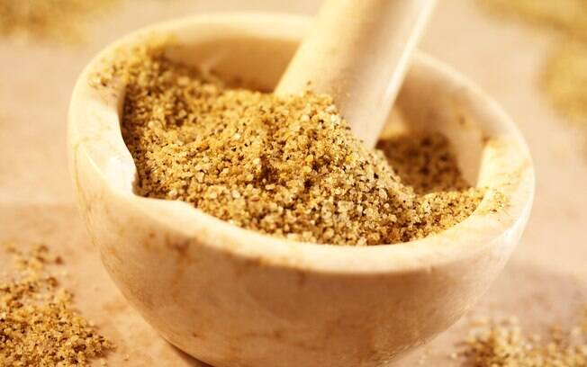

Principais benefícios dos temperos
Cúrcuma
- Propriedades Anti-Inflamatórias: A curcumina, o composto ativo da cúrcuma, possui fortes propriedades anti-inflamatórias que podem ajudar a reduzir a inflamação no corpo, contribuindo para o alívio de dores e desconfortos associados a condições inflamatórias
- Antioxidante Natural: A curcumina também é um antioxidante poderoso, o que significa que ajuda a combater os danos causados pelos radicais livres, protegendo as células e tecidos do corpo do estresse oxidativo e potencialmente ajudando a prevenir doenças crônicas.
- Promoção da Saúde das Articulações: Devido às suas propriedades anti-inflamatórias, a cúrcuma pode oferecer benefícios para a saúde das articulações, reduzindo a inflamação e melhorando o desconforto articular, o que pode ser especialmente útil para pessoas com artrite.
- Suporte à Saúde do Coração: Estudos sugerem que a curcumina pode ajudar a manter a saúde cardiovascular, reduzindo fatores de risco como o colesterol LDL ("ruim"), melhorando a função endotelial e ajudando a reduzir a pressão arterial.
- Promoção da Saúde Cerebral: A cúrcuma tem sido associada a benefícios para a saúde cerebral, incluindo a melhoria da função cognitiva e a possível redução do risco de doenças neurodegenerativas, como o Alzheimer, devido às suas propriedades antioxidantes e anti-inflamatórias.
Alecrim
- Estimulação Cognitiva: O aroma do alecrim tem sido associado à melhoria da concentração, foco e memória. A inalação do aroma do alecrim ou o consumo regular dessa erva podem ter um efeito estimulante no cérebro.
- Propriedades Antioxidantes: O alecrim é rico em antioxidantes, como ácido rosmarínico e flavonoides, que ajudam a combater os radicais livres e proteger as células do estresse oxidativo, contribuindo para a saúde celular e a prevenção de doenças crônicas.
- Alívio de Dores e Inflamações: O alecrim contém compostos anti-inflamatórios naturais que podem ajudar a aliviar dores musculares e articulares. Além disso, óleos essenciais de alecrim são frequentemente utilizados em massagens para relaxamento e alívio de tensões.
- Promoção da Digestão: O alecrim pode auxiliar na digestão, estimulando a produção de bile, que é essencial para a quebra de gorduras. Isso pode melhorar o processo digestivo e reduzir desconfortos gástricos.
- Apoio ao Sistema Imunológico: O alecrim contém nutrientes como vitamina C, vitamina A e manganês, que são importantes para a função imunológica. O consumo regular de alecrim pode ajudar a fortalecer o sistema imunológico e a proteger o corpo contra infecções.
Canela
- Controle do Açúcar no Sangue: A canela pode ajudar a melhorar a sensibilidade à insulina e a reduzir os níveis de açúcar no sangue, sendo benéfica para pessoas com diabetes tipo 2.
- Propriedades Antioxidantes: A canela é rica em compostos antioxidantes, como polifenóis, que ajudam a combater o estresse oxidativo e proteger as células contra danos causados pelos radicais livres.
- Efeito Anti-Inflamatório: A canela possui propriedades anti-inflamatórias naturais, que podem ajudar a reduzir a inflamação no corpo e contribuir para a prevenção de doenças crônicas.
- Saúde Cardiovascular: Estudos sugerem que a canela pode ajudar a melhorar os níveis de colesterol LDL ("ruim") e triglicerídeos, contribuindo para a saúde cardiovascular.
- Melhoria da Função Cognitiva: Alguns estudos indicam que a canela pode ter um efeito positivo na função cognitiva, melhorando a memória, a concentração e a atenção.
Cominho
- Melhoria da Digestão: O cominho possui propriedades carminativas que podem ajudar a aliviar gases, inchaço e desconforto gastrointestinal. Ele também estimula a produção de enzimas digestivas, contribuindo para uma digestão saudável.
- Controle do Açúcar no Sangue: Alguns estudos sugerem que o cominho pode ajudar a melhorar a sensibilidade à insulina e a reduzir os níveis de açúcar no sangue, sendo benéfico para pessoas com diabetes.
- Propriedades Antioxidantes: O cominho é rico em antioxidantes, incluindo flavonoides e fenólicos, que ajudam a combater os radicais livres e proteger as células do estresse oxidativo.
- Apoio ao Sistema Imunológico: Devido às suas propriedades antioxidantes e anti-inflamatórias, o cominho pode ajudar a fortalecer o sistema imunológico, contribuindo para a proteção contra doenças e infecções.
- Saúde Óssea: O cominho contém nutrientes como ferro, cálcio e magnésio, que são essenciais para a saúde dos ossos. O consumo regular de cominho pode ajudar a manter a densidade óssea e prevenir condições como a osteoporose.
Curry
- Propriedades Anti-Inflamatórias: Muitas das especiarias presentes no curry, como a cúrcuma, têm propriedades anti-inflamatórias que podem ajudar a reduzir a inflamação no corpo, contribuindo para a prevenção de doenças crônicas.
- Apoio à Digestão: Algumas das especiarias do curry, como o cominho e o coentro, possuem propriedades carminativas que podem ajudar a aliviar gases, inchaço e desconforto gastrointestinal, além de estimularem a digestão.
- Melhoria da Saúde Cardiovascular: Alguns componentes do curry, como a cúrcuma, podem ajudar a melhorar a saúde cardiovascular, reduzindo fatores de risco como o colesterol LDL ("ruim") e a pressão arterial.
- Ação Antioxidante: As especiarias contidas no curry, como a cúrcuma, o coentro e o gengibre, possuem antioxidantes que ajudam a combater os radicais livres, protegendo as células do estresse oxidativo e prevenindo danos celulares.
- Estimulação do Metabolismo: Alguns componentes do curry, como a pimenta, podem ajudar a estimular o metabolismo, o que pode contribuir para a perda de peso e o aumento dos níveis de energia.

Lemon Pepper
- Sabor Refrescante: O lemon pepper adiciona um sabor cítrico e refrescante aos pratos, realçando o paladar dos alimentos com um toque de limão e pimenta, o que pode tornar as refeições mais apetitosas e interessantes.
- Teor Baixo de Sódio: Muitas versões de lemon pepper são feitas com menos sódio do que os temperos comerciais convencionais, o que o torna uma opção mais saudável para dar sabor às refeições sem sobrecarregar o consumo de sódio.
- Fonte de Vitamina C: A casca de limão presente no lemon pepper contém vitamina C, um antioxidante que auxilia na proteção das células contra danos causados pelos radicais livres, fortalece o sistema imunológico e apoia a saúde da pele.
- Estimulação do Paladar: A combinação de sabores cítricos e picantes do lemon pepper pode ajudar a estimular o paladar, tornando as refeições mais saborosas e satisfatórias.
- Redução do Uso de Sal: A presença do sabor cítrico no lemon pepper pode permitir que você reduza a quantidade de sal utilizada em suas refeições, contribuindo para a promoção da saúde cardiovascular e ajudando a manter a pressão arterial sob controle.

Louro
- Melhoria da Digestão: A folha de louro é conhecida por suas propriedades carminativas, que podem ajudar a aliviar gases, inchaço e desconforto gastrointestinal. Ela também pode estimular a produção de enzimas digestivas, promovendo uma digestão saudável.
- Propriedades Anti-Inflamatórias: A folha de louro contém compostos, como o ácido cafeico, que têm propriedades anti-inflamatórias naturais, podendo ajudar a reduzir a inflamação no corpo.
- Controle do Açúcar no Sangue: Algumas pesquisas sugerem que a folha de louro pode ajudar a melhorar a sensibilidade à insulina e a regular os níveis de açúcar no sangue, sendo benéfica para pessoas com diabetes.
- Apoio ao Sistema Imunológico: A folha de louro é rica em antioxidantes e compostos que podem fortalecer o sistema imunológico, ajudando a proteger o corpo contra doenças e infecções.
- Redução do Estresse: A inalação do aroma da folha de louro pode ter efeitos relaxantes e ajudar a reduzir o estresse. Alguns óleos essenciais de folha de louro também são utilizados em aromaterapia para promover o relaxamento.
Noz-Moscada
- Propriedades Digestivas: A noz-moscada é conhecida por suas propriedades carminativas, que podem ajudar a aliviar gases, inchaço e desconforto gastrointestinal, além de estimularem a digestão.
- Estimulação Cognitiva: Alguns estudos sugerem que compostos da noz-moscada podem ter efeitos estimulantes no cérebro, melhorando a função cognitiva, a memória e a concentração.
- Ação Anti-Inflamatória: A noz-moscada contém compostos como a miristicina, que possui propriedades anti-inflamatórias naturais, contribuindo para a redução da inflamação no corpo.
- Alívio da Dor: A aplicação tópica de óleo de noz-moscada em áreas afetadas pode proporcionar alívio temporário de dores musculares e articulares, devido às suas propriedades analgésicas.
- Promoção do Sono: A noz-moscada é frequentemente associada a um efeito calmante e pode ser usada em quantidades pequenas em bebidas quentes antes de dormir para ajudar a induzir o sono.
Pimenta do Reino
- Melhoria da Digestão: A pimenta-do-reino pode estimular a produção de enzimas digestivas e sucos gástricos, auxiliando na digestão de alimentos e reduzindo o risco de desconforto gastrointestinal.
- Propriedades Antioxidantes: A pimenta-do-reino contém compostos antioxidantes, como a piperina, que ajudam a combater os radicais livres e a proteger as células do estresse oxidativo.
- Apoio à Perda de Peso: Alguns estudos sugerem que a piperina presente na pimenta-do-reino pode ajudar a aumentar o metabolismo e a reduzir a formação de células de gordura, contribuindo para a gestão do peso.
- Alívio de Congestão Nasal: A pimenta-do-reino pode ajudar a aliviar a congestão nasal, uma vez que pode estimular a circulação e reduzir o acúmulo de muco.
- Melhoria da Absorção de Nutrientes: A piperina na pimenta-do-reino tem sido associada à melhoria da absorção de nutrientes, como vitaminas e minerais, no intestino, o que pode maximizar os benefícios dos alimentos que você consome.
Tomilho
- Propriedades Antioxidantes:Propriedades Antioxidantes: O tomilho é rico em compostos antioxidantes, como flavonoides e ácido rosmarínico, que ajudam a combater os radicais livres e proteger as células do estresse oxidativo.
- Saúde Respiratória: O tomilho é conhecido por suas propriedades expectorantes e descongestionantes, podendo aliviar a congestão nasal, tosse e sintomas de resfriados, ajudando a abrir as vias aéreas e facilitar a respiração.
- Apoio ao Sistema Imunológico: Devido às suas propriedades antioxidantes e antibacterianas, o tomilho pode fortalecer o sistema imunológico, ajudando a proteger o corpo contra infecções e doenças.
- Melhoria da Digestão: O tomilho possui propriedades carminativas que podem ajudar a aliviar gases, inchaço e desconforto gastrointestinal, além de estimular a produção de enzimas digestivas.
- Bem-Estar Mental: O aroma do tomilho pode ter efeitos calmantes e relaxantes, sendo utilizado em aromaterapia para aliviar o estresse, a ansiedade e promover um estado de tranquilidade.
Caixa de Comentário
Cadastrar